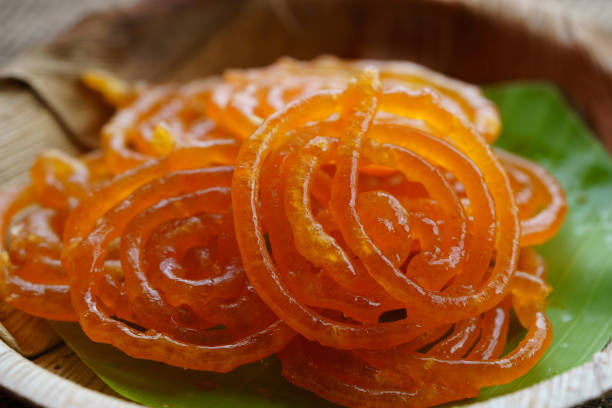
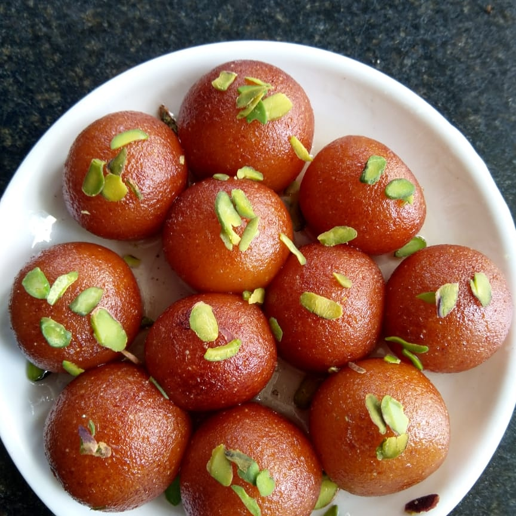
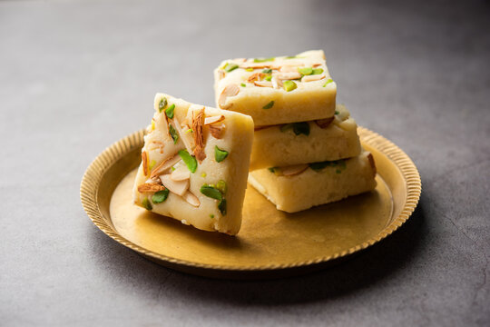

Jalebi:
Ingredients:
- 1 cup all-purpose flour (maida)
- 1 cup yogurt
- 1/4 teaspoon baking soda
- 1 cup sugar
- 1/2 cup water
- Saffron strands (optional)
- Oil or ghee for frying
Steps:
- Mix flour, yogurt, and baking soda to form a smooth batter.
- Let it ferment for a few hours.
- In a separate pan, make a sugar syrup by dissolving sugar in water.
- Add saffron strands for flavor and color.
- Heat oil or ghee in a deep pan.
- Pour the batter into a squeeze bottle or a piping bag.
- Squeeze the batter into hot oil in a spiral shape.
- Fry until golden brown, then transfer to the sugar syrup.
- Let it soak for a minute, then serve.

Gulab Jamun:
Ingredients:
- 1 cup milk powder
- 1/4 cup all-purpose flour (maida)
- 1/4 cup ghee (clarified butter)
- 2-3 tablespoons milk
- 1/4 teaspoon baking soda
- Oil or ghee for frying
- Sugar syrup (1 cup sugar, 1 cup water, cardamom powder)
Steps:
- Mix milk powder, flour, ghee, and baking soda.
- Add milk gradually to form a soft dough.
- Divide the dough into small portions and roll them into smooth balls.
- Heat oil or ghee and fry the balls until golden brown.
- Squeeze the batter into hot oil in a spiral shape.
- In a separate pan, prepare sugar syrup by boiling sugar, water, and cardamom powder.
- Dip the fried balls in the sugar syrup and let them soak for a few hours. Serve warm.

Burfi:
Ingredients:
- 2 cups of condensed milk
- 2 cups of full-fat milk powder
- 1/2 cup of ghee (clarified butter)
- 1/2 teaspoon of cardamom powder
- 1/2 cup water
- Chopped nuts for garnish (optional)
Steps:
- Heat ghee in a pan over medium heat.
- Add condensed milk and milk powder. Stir continuously to avoid lumps.
- Cook the mixture until it thickens and leaves the sides of the pan.
- Add cardamom powder and mix well.
- Transfer the mixture to a greased tray and spread it evenly.
- Garnish with chopped nuts if desired.
- Let it cool, then refrigerate for a few hours.
- Once set, cut into squares and serve.
